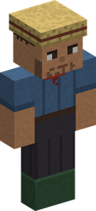
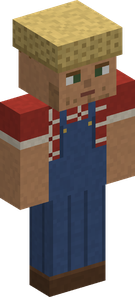
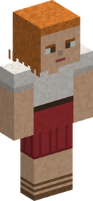
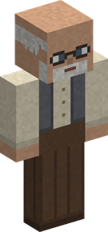
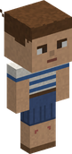
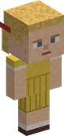

Villages¶
The islands are lived in. One Piece villages rise in five lands, each in its land's own look, each with its own name, its people and their day. They are where the merchants set up their stalls, where the merchant ship anchors, and where the village events happen. One place in four is larger: a walled town.
Only in new land
Villages are part of the world's generation: they appear in land that has not been explored yet. Villages already made keep their shape: what 0.4.0 brings (the four new looks, the halls, the towns, the pirates' and the Revolutionaries' villages) is found in new land only. A village made before has no hall, and never passes under a flag.
Minecraft's own villages no longer generate
Since 0.4.0 a world has Cruise's villages alone. They grow in the same lands, and about one more in six stands where a vanilla village would have taken the room. With the vanilla villages go the villagers and their trades, the iron golems and the raids. Villages already generated stay as they are, and the log book no longer counts them among the places to find. To have both kinds, set withVanillaVillages = true under villages in config/inocruise-common.toml; it is read when the server or the world starts. The older vanillaVillages setting is no longer read. See Configuration.
Five lands, five looks¶
A village takes the look of the land around it, even when it stands on that land's beach. Who heads it, and what his building is called, follows the land too.
| Land | Where | How it is built | Its people | At its head | His building |
|---|---|---|---|---|---|
| Plains | plains, sunflower plains, meadows | white walls and red roofs | the villagers shown below | Mayor | Town Hall |
| Desert | desert | sandstone houses with flat roofs behind crenellated parapets, terracotta and glazed tiles, cloth awnings, a dome on the tavern and on the hall, jars where the plains have barrels; no timber and no brick | turbans and head cloths, long robes worn open, wide sashes, sandals | Governor | Governor's Palace |
| Snowy plains | snowy plains | spruce planks on a foot of stone, stone chimneys, roofs in steps that carry the snow, firewood by the doors, carved ice on the square | long coats, fur hats, knitted caps, scarves and mittens | Chief | Great Hall |
| Savanna | savanna | acacia and fired clay: walls of yellow or red clay or of logs, roofs of four slopes far out over the walls, a gallery on posts over each door, a square of beaten earth round a well of clay | bare to the waist in skirts of grass, their hair in a knot, a necklace of white stones | Elder | Elders' Hall |
| Taiga | taiga | rough stone, mossy at the foot, between posts of logs; roofs of logs laid in steps under a ridge beam, pumpkins behind the houses, shields along the hall | dressed as Elbaf's people: horned helmets, furs, bright tunics, braids | Jarl | Longhouse |
Everything a village has is there under each look: the square and its well, the tavern, the workshops, the windmill inland, the port, the lighthouse and the shipyard by the sea, the notice board, the events, the flag.
- Under the snow the lanes stay clear, and a village by a frozen sea has its port all the same: the ice takes its piers and its boats.
- In the savanna a new block, the Terracotta Chimney Cap, smokes on the chimneys.
- A pirate crew's blockhouse is built in the land's own way; the Marines' post and the Revolutionaries' camp are the same everywhere.
A village stands in a clearing. No tree grows on a village's ground (its plots, its lanes, a town's wall) nor within eight blocks of it, in any land: the trees round a village are whole, and the forest begins a few steps from its houses. A tree you plant in a village grows as anywhere.
What a village is made of¶
| The market square | a well, a bell, the notice board and four stalls. The travelling merchants set up here. |
| The hall | on the square, with a mast on its roof and the village's flag on it. The one at the village's head is there by day. See The hall and its flag. |
| The tavern | with its barkeeper, who sells the rumours of the events. In the evening a musician plays there: a flute, a violin or a guitar, and the Musician's own tunes. |
| Trade buildings | four to six of them: restaurant, forge, workshop, laboratory, sewing room, tannery, masonry. |
| Houses | one inhabitant in every house and every workshop. |
| By the water | a port with its piers, a shipyard and a fisherman's house on stilts, and on the sea a lighthouse. A fishing boat, and sometimes a dinghy, are moored at the piers. |
| Inland | a windmill, with its fields of wheat, Bitter Grass and Medicinal Herb. |
| The farm | animals in its pen; a cat or a dog hangs about the square. |
A village on a slope has roads that climb from house to house: every door is joined to the market square, with never more than one block to step up. Smoke rises from the chimneys (each wears a Chimney Cap, a block you can take for your own roof), and the bell rings at dawn and at dusk. The coastal villages made since 0.4.0 are a little wider.
Every village has a name: Honey Village, Anchor Town, Komura... It comes up on your screen as you walk in, and the Navigator's Log Book keeps the names of the villages you have been to. A place made since 0.4.0 whose name is a word is called a Village or a Town for what it is; villages already made keep their names.
One place in four is a town: about twice a village's houses, more than twice its people, a workshop of every trade, a wall, guards, and four buildings no village has. See Towns.
The hall and its flag¶
Every village made since 0.4.0 has a hall on its market square. In the plains it is the town hall: the tallest house on the square, with a stepped gable, a balcony over its doors and a mast on its roof. The desert's palace is under a dome; the savanna's hall keeps the stepped gable.
The one at the village's head (the mayor in the plains; see the table for the others) is there by day, behind his desk. Right click him and he tells you:
- what his village is: its name, its people, its workshops, its port, and whether it is a town;
- who is there: the Marines, a pirate crew, the Revolutionaries, a group of players, or nobody;
- what it would take to put the village under your flag: see A village under your flag.
He is one of the villagers. Striking him is a crime like any other, and if he is killed another one comes three days later.
The flag on the mast says who holds the village.
| On the mast | Who holds the village |
|---|---|
| The Marines' flag | the Marines, who keep a post in it or a base beside it |
| A Jolly Roger like no other | a pirate crew: each has its own name and its own flag |
| The Revolutionary Army's flag | the Revolutionaries, who have a camp near it |
| The flag of a group of players (for a crew, its own Jolly Roger) | the players who took it |
| A bare mast | nobody, or a village whose people are all dead |
Whose village¶
Of eight new villages:
| How many | Whose | What stands there |
|---|---|---|
| Three in eight | the Marines' | for two of them a small Marine post among the houses, with a few soldiers; for the third a large Marine base beside the village, with its captains and its prison |
| Two in eight | a pirate crew's | a blockhouse among the houses, with its crow's nest; or, by the sea, their ship moored off the port, a gangway running to her from the foot of the lighthouse, their Jolly Roger at her masthead |
| One in eight | the Revolutionary Army's | their camp apart from the village: three tents round a fire in a clearing, some thirty blocks from the last houses, with no path to it |
| Two in eight | nobody's | a bare mast |
- By the sea, where there is water enough for a ship, pirates are twice as many: they have the villages the Marines' post would have had.
- Where the land will not do for the large base, the village has the post instead. Where the land around a village is too rough or too wet for a camp, the village is nobody's.
- Villages already made keep whoever they had.
Those who keep a village walk about in it (since 0.4.1). Their captain and the first man of each post keep their place; the others are on the square by day, at the tavern in the evening, and go back to their post at night. The Revolutionaries all stay in their camp. Each of them has a name, shown with his rank when you look at him: "Dorn, Marine Captain". One who falls is relieved three days later. Ask the one at the village's head where they are: he says how many are left, and you see them through the walls for a minute (see By force).
The Marines come for whoever commits a crime in the village. Every Marine player has the friend's price at the stalls of a Marine village: 10 % off.
A pirate crew's men are no friends of the Marines or the Bounty Hunters, whom they strike on sight. Anyone else they leave alone, unless struck first; they remember a blow for five minutes.
The Revolutionaries. Eight of them keep the camp, soldiers, brutes and a captain: fighters of their own, in capes, goggles and hooded cloaks. Like a crew's men they strike the Marines and the Bounty Hunters on sight and leave everyone else alone, unless struck first. Every Revolutionary player has the friend's price in such a village. The camp is no part of the village: nothing mends it, and breaking it is nobody's crime.
A village that someone keeps is not won by good turns or by a great bounty: it is taken from them by force. A village that nobody holds can pass under your flag. Both are told in A village under your flag.
The people¶
Fishermen, farmers, craftsmen and townspeople live there, with two or three children in each village. Right click one to hear what he has to say.
Everyone has a name (since 0.4.1): a name of his land, shown with his trade when you look at him - "Marlo, Farmer", "Sena, Innkeeper". The villagers, the children, a town's guards and keepers and the one at the village's head all have one; the people of villages already made get theirs as you come near. Now and then one tells you who he is, or speaks of a neighbour by name. The tavern's barkeeper, the merchants and the people of the events keep their title.
| Time of day | Where they are |
|---|---|
| Morning and afternoon | at work: the fishermen on the pier, the farmer at the mill, the craftsmen at the workshops |
| Noon | on the market square |
| Evening | at the tavern |
| Night, or when danger comes | at home |
The children play tag on the square by day and go home before the adults. Two villagers who cross stop for a word.
The villagers have eight looks; the two children stand half as tall as an adult.






In 3D: drag to turn, scroll or pinch to zoom; the buttons change the look.
These are the people of the plains. In the four other lands they dress for the place: see the table.
They know who you are. A pirate whose bounty has reached 100,000 Belly is known: people step away from him and have only a wary word. A Marine is welcome. The people of a village that your group rules by fear step away from you too.
Pirates and bandits do not appear in the middle of a village.
Hands off the villagers¶
| What you do | What it costs |
|---|---|
| Strike a civilian | your bounty rises by 100 Belly, and the village is closed to you for a day |
| Kill a civilian | your bounty rises by 1,000 Belly, and the village is closed to you for three days |
| The same to a child, or to a town's guard | double |
| Row a moored boat away from the port | a theft: it costs what a blow costs |
| Break the village's blocks by hand | the first two in a day are warnings; each one after that costs what a blow costs |
A player whose faction has no bounty, a Marine, loses loyalty instead. The civilians around run home, and the village's Marines come for you; in a town its guards come too.
- The one at the village's head is a villager like the others: the same costs.
- Killing one of a village's people earns nothing, whoever it is.
- A death that follows your blow by a moment (a fall, a fire, your own animals) is counted as yours.
- A crime in a village that flies your own group's flag also costs it some of its loyalty.
While a village is closed to you, its people refuse to talk, its merchants do not trade with you and its notice board will not deal with you. A closed town also has no room for you at its inn, takes nothing from you at its warehouse and closes the stall you rent in its market hall, and its guards go for you on sight. Sitting in a moored boat at the pier costs nothing; rowing it away does.
Villages mend themselves¶
A village can be damaged, and recovers. Whatever broke it (an ability, an explosion, fire, a hand), it puts itself back block by block, from the ground up, once it has been left in peace for three minutes: the ruins last as long as the fight, then a house is back in about half a minute.
- What you build in a village is cleared away as it mends and handed back to you, dropped where it stood: a chest comes back with what it held.
- A village's own blocks give nothing when they break, and its chests come back empty.
- Breaking them by hand is a crime. The first two blocks in a day are warnings; the third closes the village to you and raises your bounty, as striking a villager does.
- A village whose people were all killed no longer mends: its ruins stay.
A server chooses what happens to its villages' blocks with villageDamage, under villages in config/inocruise-common.toml:
| Value | What it does |
|---|---|
MEND (default) |
a village can be damaged and mends, as told above |
FORBID |
on top of that, nothing can be broken or built in a village by hand, by an explosion or by an ability |
NOTHING |
villages are not protected at all, and what is broken stays broken |
A player in creative mode is outside these rules: what he changes in a village stays. See Configuration.
The notice board¶
On the market square, a board has two notes: the day's orders, and the news.
The orders. The board shows five small orders every morning, one for each supplying trade: fishing, hunting, mining, farming and cooking.
- An order asks for one to three of an everyday good of that trade.
- It pays 1.3 to 1.5 times what the goods are worth to their merchant, in Belly, with a Merchant's sales bonus on top.
- It pays XP in the trade too, if you practise it: half of what producing the goods gave.
- One order in four adds a small gift.
- The first player to deliver takes the order.
- Each order is one of the village's people's: the pointer on it says who asks.
- An order delivered is a good turn done to the village: after twenty good turns it will take your flag.
The bigger orders are the merchants' contracts, and a town's warehouse buys in bulk.
The news. The second note tells every event running within 2,000 blocks, as a barkeeper would tell it, with how long it still lasts. A ship at anchor gives its coordinates; a school of fish, a fallen star, a migration, a storm or the fog give a way and a distance. It costs nothing: you only have to come and read. The events themselves are told in Village events and Events at sea.
Marines¶
Three new villages in eight are the Marines': two have a small Marine post with a few soldiers, and one stands next to a large Marine base, with its captains and its prison. The others are a pirate crew's, the Revolutionaries' or nobody's: see Whose village.
No monsters¶
Since 0.4.1 no monster spawns in a living village or town: by night or in a dark corner, no hostile creature appears on its ground, from its foundations up, and no phantom comes for whoever stands in one.
- Monsters still walk in from outside: a town's guards keep their work.
- Spawners, eggs and commands work as anywhere; the fighters of a raid or an assault and the creatures of the events are untouched.
- A village whose people are all dead has its monsters back.
- A server can turn this off:
monstersInVillages, see Configuration. A data pack can let some monsters through, with the entity taginocruise:spawns_in_villages.
Life and death of a village¶
New inhabitants. A village does not stay empty after a death. Three days later, at dawn, someone new moves into the house: a fisherman after a fisherman, a child after a child, a musician at the tavern again, a new head at the hall. They only arrive while nobody is looking. The farm's animals and the cat or dog of the square come back the same way.
A village can die. Kill all the people of a village but one, before anyone new has moved in, and the village is dead for good:
- nobody comes to live there again, and the last inhabitant leaves at dawn;
- the travelling merchants and the merchant ship stay away, and its notice board is closed;
- its name comes up in grey, as an abandoned village;
- it no longer mends, its mast stands bare, and a flag that flew over it comes down;
- everyone on the server is told, and the killers share a very large bounty: 25,000 Belly for each inhabitant the village had, split by how many each of them killed.
Finding one¶
- A Navigator's Sea Chart of the village kind leads to the nearest of these villages not yet charted, and to one of Minecraft's villages when there is none in reach. A chart drawn to a town is named for it.
- The arrival of the merchant ship names the village it anchors off, when there is one with a port near. A port on a river is too shallow for it.
- The village events are announced with the name of their village and its coordinates.
For operators: /cruise locate¶
| Command | What it finds |
|---|---|
/cruise locate village |
the nearest village |
/cruise locate town |
the nearest town |
/cruise locate town desert, /cruise locate village taiga... |
the nearest place of that size in that land's look: plains, desert, snowy, savanna or taiga |
/cruise locate snowy... |
the land alone: the nearest village or town in that look |
/cruise locate adam_tree |
the nearest Adam tree |
The answer gives the place's name, where it is and how far; click the coordinates to go there. A rare kind is far: the search may take a minute, and the server goes on meanwhile.